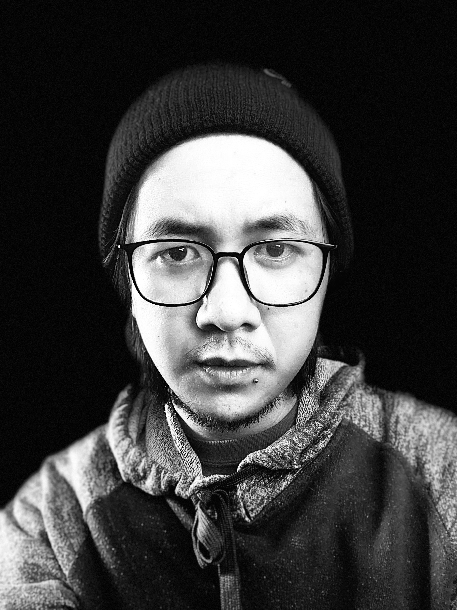

Dan Estipona
Graphic Designer | Web Developer

Summary
I am a skilled graphic Designer | Website Developer with 6 years of experience, specializing in creating visually compelling designs. Proficient in Adobe Photoshop, Illustrator and Canva
with a strong eye for detail and a passion for bringing creative ideas to life.
Education
- Bachelor of Science in Information Technology, Major in Web Development (2010 - 2015)
- Pines City National Highschool (2004 - 2008)
- Baguio Central Elementary School (1998 - 2004)
Work Experience
- Junior Web Developer - Itech Pfs
2015 - 2016
- Designs Website
- Front End Developer
- Graphic Designer - D.P Estipona Design & Construction
2016 - 2019
- Designs Website
- Front End Developer
- Creative Designer
- Make Design Ads
- Graphic Designer | Q.A Lead - Doggovinci (Canada)
2019 - Present
- Design Tasks orders by customers
- Make Design Ads
- Check Tasks of other designers
- Assigns and manages Tasks of other designers
- Fulfills orders of the custmer
- Shopify | Etsy Assitance
- Print-on-demand tasks
- Web Designer - Prostore Creations DJR Store Builds - Shopify (Australia)
2021-2022
- Designs/Creates Websites tru Shopify
- Product Lister
- Designs Product Landing Page
- Logo Designer - Stadium Merch (USA)
2024-Present (Part-time)
- Designs Monogram Logo of College Athletes
Technical Skills/Apps I Used
- Graphic Design
- Adobe Photoshop
- Adobe Illustrator
- Canva
- Web Developement
- Wordpress
- Shopify
- Etsy
- E-Commerce Management
- Asana
- Midjourney
Other